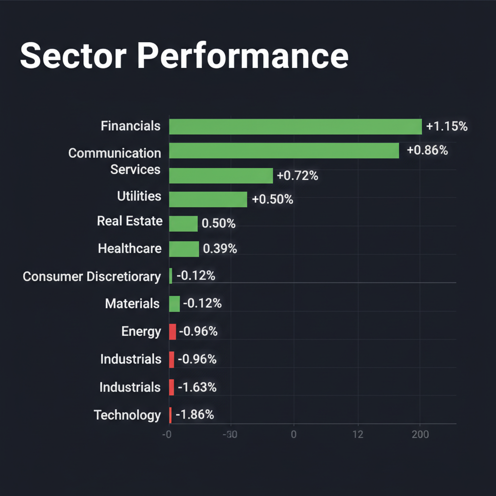
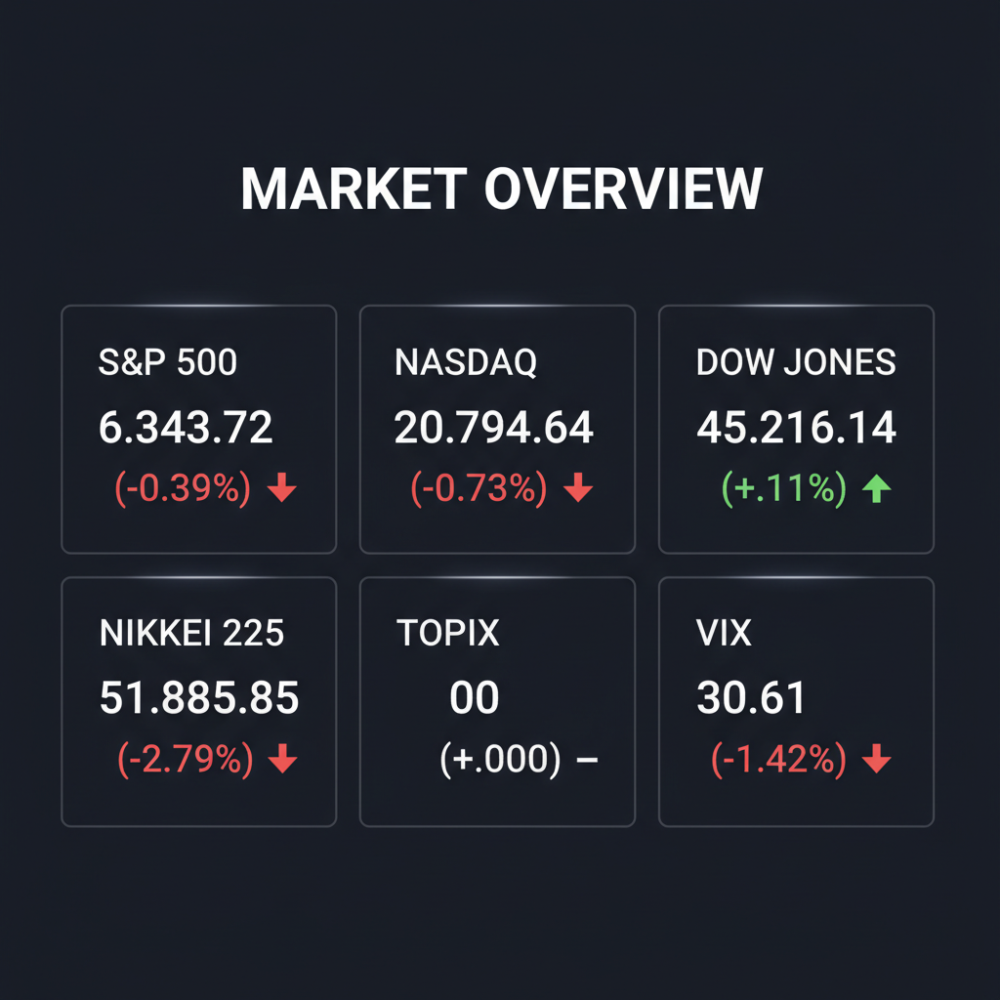

Daily Investment Report - 2026-03-31
Generated: 2026/3/31 8:18:33


1. エグゼクティブサマリー
- VIX指数が30を超える極度の警戒相場であり、中東の地政学リスクと供給網寸断によるスタグフレーション懸念から株・債券の同時下落が発生しています。
- 現在の環境下では「資本の保全」を最優先とし、ポートフォリオの現金比率の大幅な引き上げとテールリスクヘッジの構築が急務です。
- 投資機会を探る場合は全体相場への連れ安リスクを避け、強固な財務を持つ中小型バリュー株や、防衛特需の恩恵を受けるニッチトップ企業に厳選すべきです。
2. 注目銘柄リスト
強気（買い推奨）
- 山善 (8051) [時価総額: 約1,000億円台]: PBR1倍割れ・高配当という強固な財務基盤を持ち、インフレ下でも価格転嫁力を持つ商社ビジネスがパニック相場における強靭な下値支持線となります。
- Red Cat Holdings (RCAT) [時価総額: 数億ドル規模]: 米軍の無人兵器配備計画に関連し、自律群制御技術（スウォーミング）の買収により、防衛特需の恩恵を直接受ける爆発的な成長ポテンシャルを秘めています。
中立（様子見）
- REPAY Holdings (RPAY) [時価総額: 約10億ドル規模]: 公共・政府向け決済企業の買収で不況に強い安定したキャッシュフロー基盤を得ましたが、高金利下での負債増加とのれん減損リスクの精査が必要です。
- しまむら (8227) [時価総額: 数千億円規模]: 堅実な業績ガイダンスと実質無借金の強固な財務を持ちますが、全体相場の暴落に連れ安するリスクがあるため、セリングクライマックスによる底打ち確認まで待機を推奨します。
- Rocket Lab (RKLB) [時価総額: 20億〜50億ドル規模]: レーザー光通信端末企業の買収により宇宙インフラ分野での成長が強く期待されますが、政府予算の遅延リスクやM&A統合リスクを考慮し、短期的には様子見とします。
弱気（警戒）
- 中村超硬 (6166) [時価総額: 数十億円規模]: テンバガー候補として言及されましたが、安定したフリーキャッシュフローの裏付けがなく、現在の信用収縮局面では資金ショートの危険性が極めて高いです。
- ソフトバンクグループ (9984) [時価総額: 大型株 ※参考記載]: 高レバレッジによるAI全賭け戦略は、金利上昇と高ボラティリティ環境下においてマージンコールなどの深刻な逆回転リスクを抱えています。
- ナイキ (NKE) [時価総額: 大型株 ※参考記載]: 中国市場の不調やサプライチェーン問題による構造的な利益率低下に直面しており、明確なターンアラウンドが確認できない典型的なバリュートラップです。
3. セクター推奨ランキング
1.
防衛・航空宇宙テクノロジー: 地政学リスクの顕在化により、ドローンや宇宙インフラ、サイバーセキュリティなどへの国防予算シフトが中長期的な追い風となります。
2.
素材・コモディティ: イラン紛争によるアルミニウム等の供給網寸断を背景に、物理的な供給不足が価格決定力をもたらし、強力なインフレヘッジとして機能します。
3.
金融: グローバルな債券安（金利上昇）が銀行や金融機関の利ざや拡大に直結するため、ハイテク株の下落に対して相対的な強さを発揮しています。
4.
内需ディフェンシブ（日本株等）: 海外の地政学リスクや為替変動の影響を受けにくく、強固な業績ガイダンスと価格転嫁力を持つ企業が逃避資金の受け皿となります。
5.
ハイテク・中小型グロース（アンダーウェイト推奨）: 金利高止まりによるバリュエーション調整（マルチプル収縮）の直撃を受け、高レバレッジ・赤字企業は信用収縮リスクに最も脆弱です。
4. 今週の注目イベント
- 中東・イラン情勢に関する米軍の軍備増強動向および同盟国（スペイン・トルコ等）の対応変化のヘッドライン
- イランの攻撃による米アルミニウム供給網の被害規模の精査と代替供給策の発表
- VIX指数の推移確認（30のパニック水準からの鎮静化、もしくはさらなる急騰の有無）
- 山善、中村超硬など決算を発表した日本の中小型銘柄の株価反応と機関投資家の資金流入動向
- 暗号資産の不正利用（ドローン調達資金源）に関する西側諸国の新たな規制案の動向
5. リスク要因
- VIX指数30超えに伴う株・債券の「同時メルトダウン」と、伝統的な60/40ポートフォリオの分散効果の崩壊
- 供給網寸断（アルミニウム等）を起点とする広範なコモディティ・インフレの再燃と、それに伴う世界的なスタグフレーション（不況下の物価高）の進行
- 金利高止まりと信用スプレッドの急拡大による、高レバレッジ企業や外部資金に依存する赤字グロース株の資金ショート（倒産）リスク
- 経営陣の自社株買いや好決算といった一時的な好材料が、マクロ経済の悪化によって無力化されるブルトラップ（強気の罠）リスク
6. アクションアイテム
- ポートフォリオの現金比率をただちに30〜40%以上に引き上げ、「資本の保全」を最優先の行動とする
- 新規の押し目買いは一切控え、主要指数が明確なセリングクライマックス（出来高を伴う長い下ヒゲ等の底打ちシグナル）を形成するまで完全に待機する
- 全ての保有ポジションのサイズを通常の1/3以下に縮小し、ボラティリティの拡大を考慮してストップロスの幅を広く（ATRベース等で）再設定する
- VIXコールオプションの購入や、ゴールド等実物資産への分散によるテールリスクヘッジを直ちに構築する